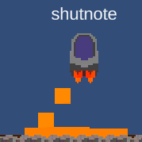

This is a gravity powerup
The Gravity is used to pick up and move props.
To make the gravity work well over high ping, clients create a ghost
The ghost is client side and reacts on there end. Then the server one trails the ghost

This is a FlameThrower powerup
The FlameThrower is used for area denial and launching the player.
The Fire creates a small AOE when colliding, leading to an denial for other players.
It also launches the player in the oppisite direction, acting as a sudo-jetpack.
Teleporter
Found around the map.
One way.
It also launches the player in the oppisite direction, acting as a sudo-jetpack.